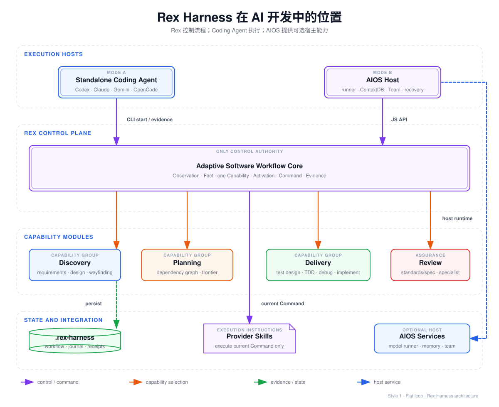
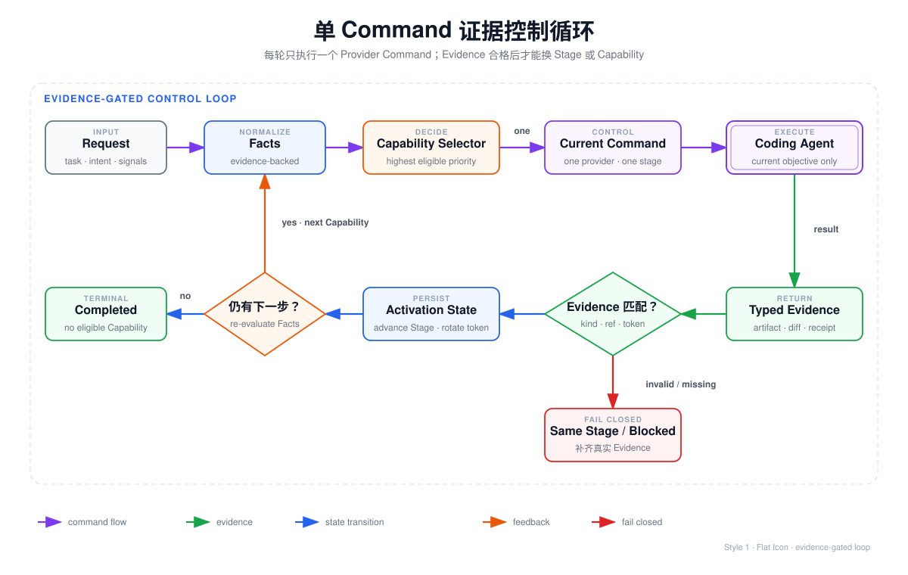
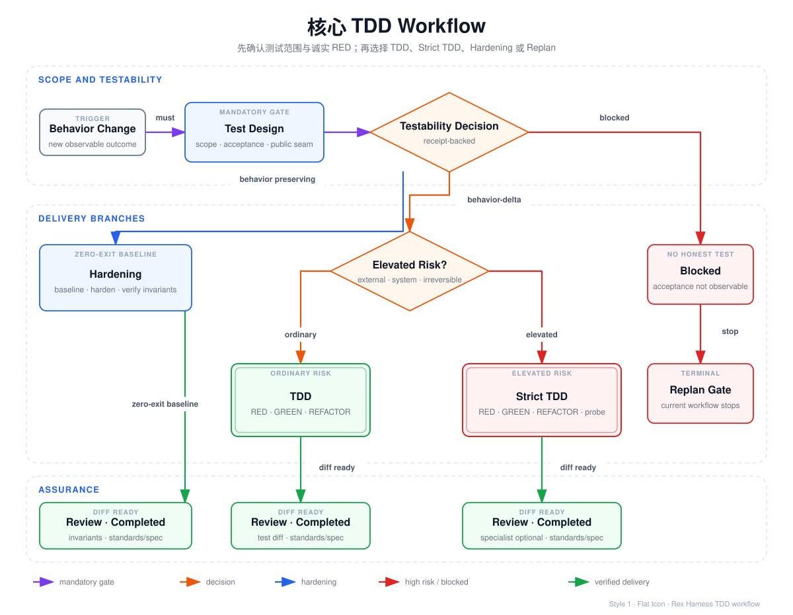

核心目标：降低 Agent 跳过需求、伪造 TDD、无证据宣称完成、跨会话丢失流程状态等问题。
01 · Runtime Position
它在 AI 开发中如何生效
约束发生在 Coding Agent 外部。Agent 不再自己决定“现在该规划、实现还是审查”；Rex 根据 Facts 选择当前 Capability，生成唯一 Command。

观察
任务文本、显式 intent、失败结果、diff、风险评估进入系统边界。
选择
Observation 转成 Fact。候选 Capability 按条件与优先级确定一个。
执行
Rex 发出当前 Provider Command。Agent 只执行该 Stage 目标。
验收
Evidence 匹配契约后推进。无证据、错 token、占位引用全部拒绝。
真正约束点：下一步选择权属于
software-workflow-runtime.mjs；Provider、Agent、AIOS runner 都不能自行重排阶段。
02 · Capability Map
按功能理解模块
workflow 是控制器。planning、testing、review 是被选择的 Capability 组。Reviewer 是执行角色，不是第二套控制器。
Workflow Core
Fact 推导、Capability 选择、Activation、Command、Evidence 校验、下一步重算。
Planning
存在依赖工作项或显式 plan 时启用。产出依赖图、frontier、parallel groups、convergence gate。
Testing
Test Design、普通 TDD、Strict TDD、Behavior-preserving Hardening。
Review
Standards/Spec Review；风险证据存在时增加单个 Specialist Reviewer。
Discovery & Delivery
Requirements、Design、Wayfinding、Root-cause Debugging、Minimal Construction、Implementation。
State & Integration
.rex-harness/、Evidence Journal、Receipt、Client Projection、Provider Catalog、AIOS Manifest。
源码建议：保留现有
src/capabilities/<name> 垂直切片。上面分组用于文档、UI、能力目录；无需拆多个 npm 包。
03 · Control Loop
流程怎么被控制
流程不是固定 DAG。每个 Capability 完成后，Rex 使用最新 Facts、已完成 Capability、类型化决定重新求值。

单 Command
同时只有一条 provider.invoke。Agent 不能把规划、实现、测试、审查一次性做完后直接声明完成。
Evidence Contract
只接受当前 Stage 规定的 Evidence kind。引用必须带 artifact:、diff:、receipt: 等协议前缀。
Fail Closed
Evidence 缺失、Command 状态损坏、token 重放、测试命令不匹配：保持当前 Stage 或阻塞。
| 控制对象 | 规则 | 作用 |
|---|---|---|
| Capability | Facts + priority + completed capabilities | 确保下一工程动作确定 |
| Provider | 只执行当前 Command | 防止 Skill 自行串联流程 |
| Evidence | kind、ref、Command token 必须匹配 | 无证据不能推进 |
| Receipt | 绑定 executable、args、cwd、exit code、输出 hash | 测试结论落到真实命令 |
| State | Workflow JSON + append-only journal | 恢复、审计、拒绝旧 token |
04 · TDD Workflow
核心 TDD Workflow
重点不是把 red-green-refactor 写进 prompt。重点是先用真实公共场景证明：存在诚实 RED、应该做行为保持加固，或当前根本不可测试。

behavior-delta
公共场景在变更前真实失败；Receipt 必须非零。普通风险进入 TDD，高风险进入 Strict TDD。
behavior-preserving-hardening
没有新增可观察行为；真实基线必须通过。走 baseline、harden、verify-invariants。
blocked
验收不可观察、命令不可执行或场景不可信。停止当前 workflow，要求 replan 或 human gate。
普通 TDD Evidence
failing-test-observedred-failure-reason-recordedpassing-test-observedimplementation-diff-recordedrefactor-check-recordedtest-diff-review-recorded
Strict TDD 增量
普通 TDD 全部 Evidence，再增加：
test-strength-check-recorded
用于 regression、external/destructive effect、system blast radius、irreversible change、high uncertainty。
关键约束：TDD 的 GREEN 已产出实现。Capability 完成后，Workflow 把独立
implementation.execute 视为已满足，避免 Agent 重复修改同一切片。
05 · Operating Guide
应该怎么用
最小使用方式：项目安装 Skill 投影，创建 work item，反复执行“读 Command、做当前目标、交 Evidence”。
安装当前 Coding Agent 的 Skill Projection
rex-harness init --client codex --root .
# 也支持 claude / gemini / opencode / hermes / grok启动一个可恢复 Work Item
rex-harness start \
--root . \
--work-item checkout-rounding \
--message "修复结账金额舍入"返回 compact rex.cli.workflow-command.v1：当前 Provider、Stage 目标、Evidence Contract、一次性 commandToken。
Agent 只执行当前 Command
按 providerId / instructionsRef 延迟加载当前 Skill。不要预载整条 Provider 链。不要自行切到下一阶段。
测试命令使用 Receipt 包装
rex-harness receipt --root . -- npm test -- checkout-rounding即使测试失败，CLI 仍返回可提交的执行 Receipt；失败 exit code 属于证据数据。
提交当前 Stage Evidence
rex-harness evidence \
--root . \
--activation <activation-id> \
--command-token <token> \
--evidence failing-test-observed=receipt:<id> \
--evidence red-failure-reason-recorded=artifact:red-analysisTest Design 的类型化决定额外使用 --testability-file decision.json。
查看、恢复、审计
rex-harness status --root . --work-item checkout-rounding
rex-harness resume --root . --work-item checkout-rounding
rex-harness status --root . --work-item checkout-rounding --full你真正控制哪些旋钮
| 旋钮 | 怎么控制 | 不要做什么 |
|---|---|---|
| 任务边界 | --work-item、message、显式 intent、typed requirements artifact | 不要把多个无关目标塞进同一 work item |
| 流程强度 | default / high-assurance profile；真实风险 Observation | 不要用 prompt 长度假装 Deep 模式 |
| 下一步 | 补充真实 Observation / Evidence，让 selector 计算 | 不要由 Agent 手工指定下一 Capability |
| 测试路径 | 提交 receipt-backed TestabilityDecision | 不要把既有通过测试伪装成 RED |
| 运行形态 | 单 Agent；AIOS 接受 team / harness promotion | 运行形态不能覆盖 Rex Command |
| 停止 | 缺 Evidence 保持 Stage；不可测试返回 blocked/replan | 不要用文字总结绕过 gate |
06 · Host Integration
Rex 与 AIOS 什么关系
依赖方向固定：AIOS 调用 Rex 公共 JS API。Rex 不导入 AIOS 私有代码。两者不能各自维护软件阶段状态机。
Rex 拥有语义控制
- Observation / Fact
- Capability selection
- Recipe / Stage
- Evidence Contract
- Workflow Activation
- 当前 Provider Command
AIOS 拥有执行宿主
- Coding Agent / 模型进程
- ContextDB 与跨会话上下文
- Team / orchestrate / long-running Harness
- 隐私、安全、审计、恢复
- pre-edit 与 verification gates
- 宿主状态投影
AIOS 是什么：这里指 rexleimo 产品线中的 RexCLI / Harness CLI，命令名
aios。它是 Codex、Claude、Gemini、OpenCode 外层的本地 Agent 工作流宿主；不是模型，也不是操作系统内核。
选择方式
只用 Rex
已有 Coding Agent；只需要单流程、Evidence gate、状态恢复。使用 CLI 与 .rex-harness/。
Rex + AIOS
需要模型 runner、ContextDB、Team、长任务恢复、安全治理。AIOS Adapter 调用 Rex JS API。
不用 Rex
只做一次性解释、无需工程门禁、无可恢复流程。直接使用 Coding Agent，减少额外摩擦。
07 · Adoption Checklist
接入检查清单
满足这些条件，Rex 才真正控制流程；只安装 Skill、不执行 Evidence loop，不算接入。
- 每个 work item 只存在一个 current Command
- Agent 按
instructionsRef延迟加载 Provider - 所有 Evidence ref 带协议前缀
- 测试事实使用 Receipt，不使用聊天结论
- Evidence 接受后立即轮换 Command token
- AIOS Adapter 不重选 Capability、不重排 Stage
- 损坏状态、未知 Receipt、placeholder 全部 fail closed
- 行为变化先完成 Test Design，再进入实现